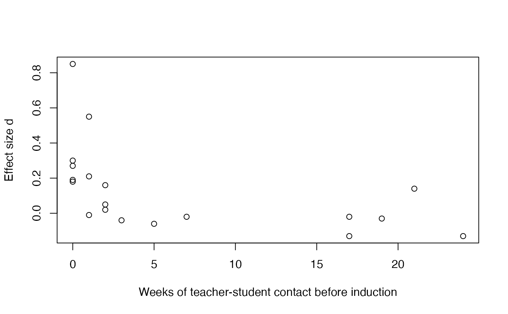

Teacher Expectancy Meta-Analysis Data (Raudenbush, 1984)
Source:R/data_teacher_expectancy.R
teacher_expectancy.RdThe 19 effect sizes from Raudenbush's (1984) synthesis of 18 experiments
testing the effect of teacher expectancy on pupil IQ, the meta-analysis
that resolved the controversy started by Pygmalion in the Classroom
(Rosenthal & Jacobson, 1968; the single famous study is shipped separately
as pygmalion). In each experiment, teachers were told that
randomly selected children were likely to bloom intellectually; the
synthesis asks how large the resulting IQ advantage was and, centrally,
why it varied across studies. Raudenbush's hypothesis, strongly supported,
was that the longer teachers had known their pupils before the expectancy
induction, the smaller the effect: credible deception is the Achilles'
heel of the design.
Format
A data frame with 19 rows (18 experiments; Pellegrini and Hicks, 1972, contributes a tester-aware and a tester-blind condition) and 10 variables.
studyInteger identifier, in the order of the paper's Table 1.
authorStudy authors (with the Pellegrini and Hicks condition noted).
yearYear of publication.
weeksEstimated weeks of teacher-student contact prior to the expectancy induction, 0 to 24. The moderator at the heart of the paper.
testingFactor:
grouporindividualIQ testing.testerFactor: test administrator
awareof orblindto the expectancy designations.n_experimental,n_controlPer-condition sample sizes (from the studies as tabulated in Raudenbush & Bryk, 1985; the 1984 table does not print them).
dStandardized mean difference: the treatment effect in IQ points divided by the control group's posttest standard deviation (positive when the expectancy children gained more). The 1984 paper's Table 1 values.
p_one_tailedOne-tailed p-value reported for the study's expectancy effect.
Source
Raudenbush, S. W. (1984). Magnitude of teacher expectancy effects on pupil IQ as a function of the credibility of expectancy induction: A synthesis of findings from 18 experiments. Journal of Educational Psychology, 76(1), 85–97.
Details
The study-level Pellegrini and Hicks values. For analyses with the 18 studies as units (the combined significance tests, the contrast on weeks of prior contact, and the heterogeneity statistic), Raudenbush merged the two Pellegrini and Hicks conditions into a single study-level entry with \(d = 0.52\) and one-tailed \(p = .010\) (Table 1 prints these on the study's header row above the two condition rows). Replace rows 4 and 5 with that pair to reconstruct his 18-study analyses, as the teacher expectancy vignette does. For the tester aware-versus-blind comparisons the two conditions enter separately, which is why the data ship at the condition level.
Relation to the 1985 version. Raudenbush and Bryk (1985)
re-standardized the same literature for their empirical Bayes analysis
(that version circulates as dat.raudenbush1985 in metafor),
so its effect sizes differ from the d column here, which preserves
the 1984 paper's metric. The sample sizes are common to both.
The teacher expectancy vignette
(vignette("teacher_expectancy", package = "DMAR")) reproduces the
paper's analyses with combine_p, meta_contrast,
and meta_smd, and then reanalyzes the data with modern
random effects machinery.
References
Raudenbush, S. W. (1984). Magnitude of teacher expectancy effects on pupil IQ as a function of the credibility of expectancy induction: A synthesis of findings from 18 experiments. Journal of Educational Psychology, 76(1), 85–97. doi:10.1037/0022-0663.76.1.85
Raudenbush, S. W., & Bryk, A. S. (1985). Empirical Bayes meta-analysis. Journal of Educational Statistics, 10(2), 75–98.
Rosenthal, R., & Jacobson, L. (1968). Pygmalion in the classroom: Teacher expectation and pupils' intellectual development. Holt, Rinehart and Winston.
See also
pygmalion for the single Rosenthal and Jacobson
study this literature grew from; meta_smd,
meta_contrast, and combine_p for the
analyses the vignette reproduces.
Author
Ken Kelley kkelley@nd.edu
Examples
data(teacher_expectancy)
head(teacher_expectancy)
#> study author year weeks testing tester
#> 1 1 Rosenthal, Baratz, & Hall 1974 2 group aware
#> 2 2 Conn, Edwards, Rosenthal, & Crowne 1968 21 group aware
#> 3 3 Jose & Cody 1971 19 group aware
#> 4 4 Pellegrini & Hicks (tester aware) 1972 0 group aware
#> 5 5 Pellegrini & Hicks (tester blind) 1972 0 group blind
#> 6 6 Evans & Rosenthal 1969 3 group aware
#> n_experimental n_control d p_one_tailed
#> 1 77 339 0.02 0.401
#> 2 60 198 0.14 0.206
#> 3 72 72 -0.03 0.791
#> 4 11 22 0.85 0.003
#> 5 11 22 0.19 0.242
#> 6 129 348 -0.04 0.709
# The paper's central picture: effect size against weeks of prior contact.
plot(d ~ weeks, data = teacher_expectancy,
xlab = "Weeks of teacher-student contact before induction",
ylab = "Effect size d")

# The study-level (18-study) data Raudenbush used for the combined tests:
# merge the two Pellegrini & Hicks conditions into their study row.
study_level <- teacher_expectancy[-c(4, 5), ]
ph <- data.frame(study = 4, author = "Pellegrini & Hicks", year = 1972,
weeks = 0, testing = "group", tester = "aware",
n_experimental = 22, n_control = 22,
d = 0.52, p_one_tailed = .010)
study_level <- rbind(study_level[1:3, ], ph, study_level[4:17, ])
round(c(mean = mean(study_level$d), sd = sd(study_level$d)), 2) # .11, .20
#> mean sd
#> 0.11 0.20